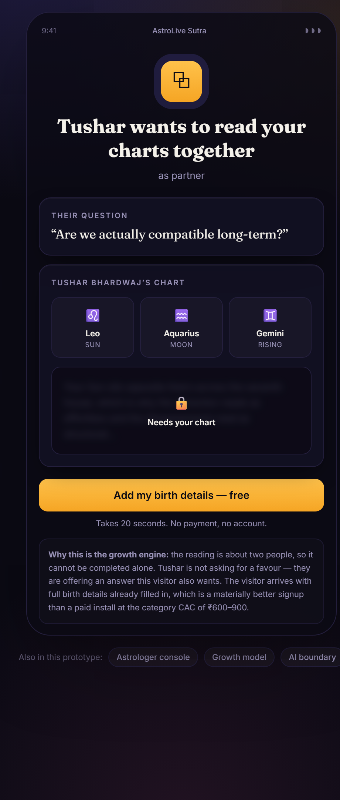
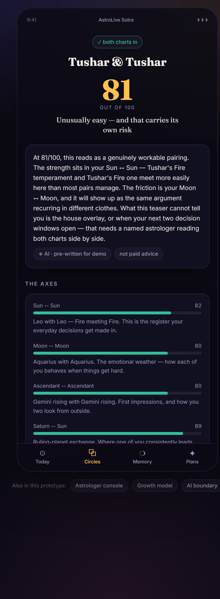
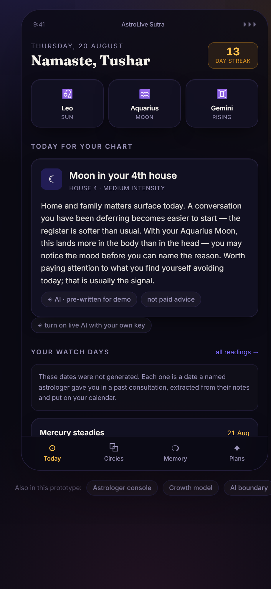
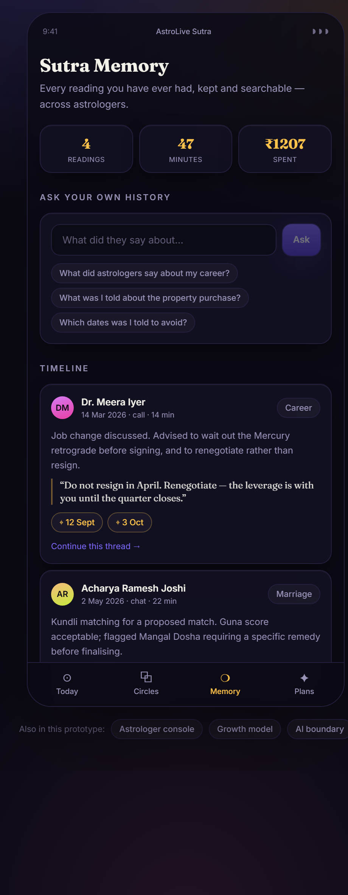
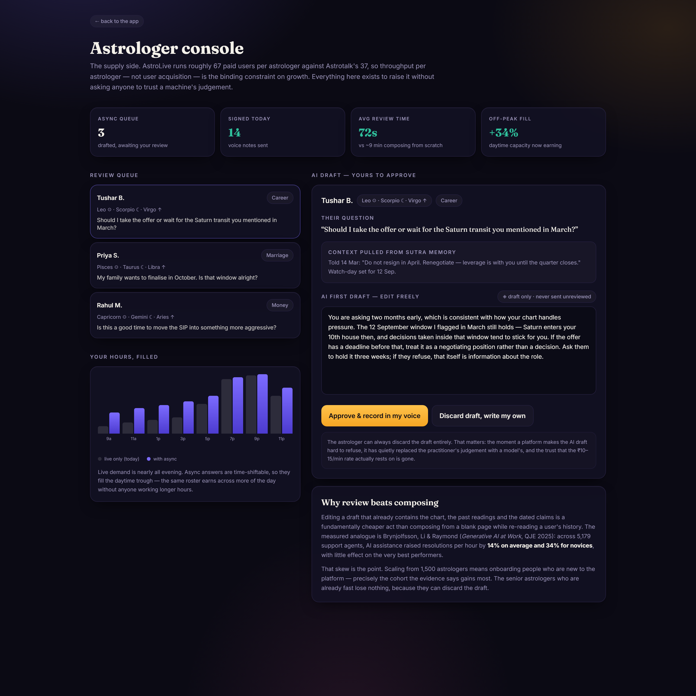
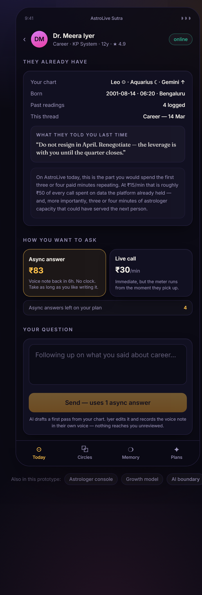
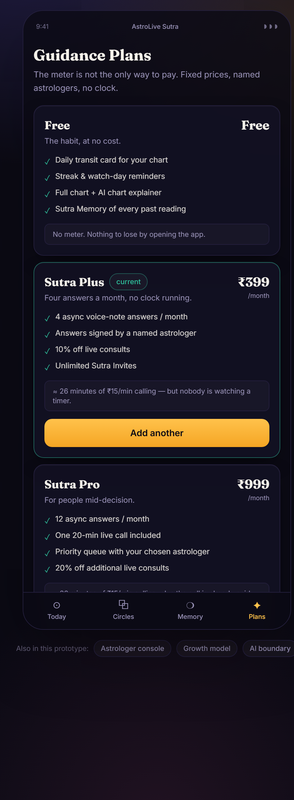

| Team | Mini Anon |
| Team leader | Tushar Bhardwaj |
| Member | Aindrela Saha |
| Submitted | 20 August 2026 |
A working web application, publicly accessible, no login required.
minianon.github.io/astrolive-sutra
Source: github.com/minianon/astrolive-sutra.
The invite mechanic works across separate browsers with no shared
backend — open it in a private window to verify.
| 1 Executive summary | 9 Growth model |
| 2 Teardown: AstroLive as it stands | 10 Revenue model |
| 3 Competitive benchmark | 11 Expected impact |
| 4 Four structural gaps | 12 Success metrics |
| 5 Why the obvious answers fail | 13 Scalability & rollout |
| 6 The solution: four modules | 14 Risks |
| 7 The AI architecture | 15 Limitations & disclosures |
| 8 Prototype walkthrough | 16 References & AI-tool citation |
AstroLive is a fast-growing consultation marketplace with a structural problem it cannot solve with money. This submission identifies that problem precisely, then builds the one class of solution that fits its actual constraints.
AstroLive commenced operations in September 2024 and reports 100,000+ paid users across 1,500 astrologers, targeting 10 lakh paid users.1 It has raised no disclosed institutional funding.2 Astrotalk, the category leader, posted ₹1,214 crore of FY25 revenue at 85% year-on-year growth with roughly ₹250 crore of profit, serving 1.5 million monthly transacting users across 41,000+ astrologers.3
Astrotalk's repeat rate is estimated at 25–30%.5 In the best product in the market, roughly 70–75% of paying users transact once and never return. No other number in this report is worth as much as that one, because it is unclaimed by anybody.
AstroLive Sutra — one product, four interlocking modules. Sutra Invite makes every relationship question an acquisition event, because a two-person reading cannot be completed alone. A transit feed converts astrologers' own past claims into dated watch-days, giving users a reason to open the app on a day when nothing is wrong. An AI copilot with async answer packs raises throughput per astrologer and unlocks fixed-price revenue that does not depend on a running meter. And Sutra Memory keeps every reading searchable across astrologers, turning a disposable transaction into a compounding switching cost.
The AI position is deliberate and narrow: AI expands astrologer capacity; it never replaces astrologer accountability. A paid AI oracle is both already commoditised and directly cannibalistic to the marketplace — §7 sets out why we refused to build one.
What the product does today, how it earns, and where value leaks. Assessed from the public web and app-store surfaces in August 2026.
| Attribute | Position | Basis |
|---|---|---|
| Operations commenced | September 2024 | company-reported |
| Paid users | 100,000+ (1 lakh) | company-reported |
| Astrologers onboarded | 1,500 | company-reported |
| Stated target | 10 lakh paid users | company-reported |
| Parent | Tech4Billion Media — also Chingari's parent; founder Sumit Ghosh | company-reported |
| Funding raised | None disclosed | third-party |
| App-store signal | ~25k downloads, 3.9 / 5 | third-party |
| Stated roadmap | Premium subscription tiers; pooja and product commissions; regional and international expansion | company-reported |
Revenue is a take-rate on minutes of human attention, funded from a prepaid wallet. That has three consequences worth naming:
| Leak | Mechanism | Est. cost |
|---|---|---|
| Consult preamble | The first 3–4 minutes of a live consult re-establish birth details and prior context the platform already holds | ≈₹50/call at ₹15/min |
| Episodic usage | No daily surface tied to the user's own chart, so the app is opened only in crisis | 70–75% never return |
| Private by default | Relationship readings — the single largest query category — produce nothing shareable | K ≈ 0 no organic loop |
| Disposable history | Advice evaporates when the call ends; no switching cost accrues | 0 lock-in |
| Idle daytime supply | Live-only delivery cannot time-shift into off-peak hours | ~50% of roster hours |
Every claim later in this report is priced against these figures. Each row carries its basis, so a reader can discount the estimates without discarding the argument.
| Metric | Figure | Basis | Source |
|---|---|---|---|
| FY25 total revenue | ₹1,214 Cr | company | Outlook Business; BW Disrupt |
| FY25 growth | +85% YoY | company | from ₹656 Cr in FY24 |
| FY25 profit | ≈₹250 Cr | company | FY25 reporting |
| Monthly transacting users | 1.5 M | company | FY25 summaries |
| Astrologers | 41,000+ | company | FY25 reporting |
| Average transaction value | ₹230 | company | FY25 summaries |
| Store revenue (non-meter) | ₹140 Cr | company | FY25; ≈₹200 Cr run-rate |
| Repeat-user rate | 25–30% | third-party | case-study analyses |
| Revenue from repeat users | ≈80% | third-party | case-study analyses |
| CAC | ₹600–900 | third-party | growth analyses |
| LTV | ≈₹1,500 | third-party | growth analyses |
| Marketing spend | 20–25% of revenue | third-party | ≈₹236–296 Cr |
| Organic share of traffic | 77% | third-party | SEO case study |
| AstroLive | Astrotalk | Implication | |
|---|---|---|---|
| Paying users | ~100,000 | 1,500,000 | ≈15× scale gap |
| Astrologers | 1,500 | 41,000 | ≈27× supply gap |
| Users per astrologer | ≈67 | ≈37 | AstroLive's roster carries ~1.8× the load |
| Disclosed funding | None | Funded, IPO-track | no CAC auction is winnable |
| Primary channel | Paid + app store | 77% organic search | incumbent's moat is time, not money |
| Strategic conclusion | Compete on a channel the incumbent's product shape cannot easily adopt. | ||
| Precedent | Result | What it establishes |
|---|---|---|
| Co–Star | 20–30 M users, grown substantially on friend-compatibility sharing; social-sharing astrology tools lifted discovery 30–60% among young users6 | Astrology is inherently social. Sharing is not a bolt-on — it is the natural shape of the product. |
| Dropbox referrals | 3900% growth in 15 months; permanent +60% signup volume7 | A referral built into the core value proposition outperforms one bolted onto the marketing surface. |
| Duolingo streaks | Churn cut from 47% to 28%; ~3× growth in the share of DAU holding a 7-day streak; Streak Freeze cut at-risk churn 21%8 | A free daily ritual is the cheapest retention mechanism available, and it compounds. |
| Brynjolfsson, Li & Raymond, “Generative AI at Work” QJE 2025 / NBER w31161 | 5,179 support agents: +14% throughput on average, +34% for novices, minimal effect on top performers9 peer-reviewed | AI assistance raises the output of a human service roster, and lifts newcomers most — the exact cohort a roster scaling from 1,500 consists of. |
| Astrotalk's own store | ₹140 Cr FY25, ≈₹200 Cr run-rate3 | Revenue beyond the per-minute meter is proven at scale in this exact market. |
Each gap is attached to a number rather than an intuition. Together they define the problem the prototype solves.
Astrology is inherently relational. Marriage compatibility, partner questions and family decisions dominate Indian astrology demand — Kundli matching exists as a product category for exactly this reason, and Astrotalk's Love Calculator draws 381,000 visits a month on its own.4 Yet consultation is strictly one-to-one and private. A user asks about their marriage, receives an answer, and nothing leaves the app. The other person in the question — who is at least as invested in the answer — is never touched.
The consequence is that growth must be purchased. At ₹600–900 per user against an incumbent spending ₹236–296 crore a year, that is a losing auction for an unfunded challenger.
The free tools — daily horoscope, love calculator, Panchang — are commodity content available on a hundred sites. They attract; they do not retain. Nothing in the product is tied to this user's chart in a way that makes tomorrow's visit meaningful, so consultation stays crisis-triggered and episodic.
Per-minute billing means revenue scales only with live human availability. AstroLive runs ~67 paid users per astrologer against Astrotalk's ~37 — its roster already carries close to double the load. Reaching 10 lakh users at even that stretched ratio requires ~15,000 astrologers, a 10× recruitment problem that moves far slower than demand. And because live demand concentrates in the evening, roughly half of available roster hours earn nothing.
A per-minute clock charges people for thinking. Someone in genuine distress — the modal user — rushes their question, receives a worse answer for it, and remembers the platform as expensive. It also suppresses first purchase: an open-ended meter is a far harder first commitment than a fixed price, precisely at the top of the funnel where conversion matters most.
They are not four separate problems. Buying users you cannot serve, who do not return, is the same problem observed from four angles — which is why the solution has to address all four at once rather than picking the easiest.
Four moves any team would propose first. Each fails arithmetically, and saying why is how we arrived at what remains. This critique is aimed at the arithmetic, never at the operators.
Even at the favourable end of the CAC band this is a ₹54 crore commitment, and the incumbent can outbid any level AstroLive reaches. Paid acquisition is a channel where the better-capitalised party wins by definition.
77% of Astrotalk's traffic is organic, off a content system with years of accumulated domain authority; 83% of its targeted keywords are informational, and it converts that traffic in the app.4 Search authority is a time-compounding moat: the input is years, and money accelerates it only marginally. A company that began operations in September 2024, with no funding runway to wait, cannot arrive before the runway ends. Worth pursuing as a long-term hedge; useless as the answer to the current question.
This is the right instinct about the constraint and the wrong instrument. Astrologer supply is a trust-and-vetting problem, not a listings problem — quality screening is precisely what the incumbent treats as part of its moat. Recruiting 13,500 practitioners while keeping quality intact is slower than user acquisition, so demand growth converts into queues. Recruitment should continue; it cannot be the mechanism that closes a 10× gap.
The most tempting move in 2026, and the one we most deliberately refused. It fails twice.
AstroGPT, Om.AI and AstroSage's AI layer all ship a conversational AI astrologer today.10 Building a fifth differentiates nothing, and any competitor can clone it in a sprint.
AstroLive's revenue is ₹10–15 per minute of human attention. Users pay for a named person who is accountable for what they said about their marriage. An AI answering paid questions competes with the supply side the marketplace is built on.
Exactly two things: growth that is structural (built into the product mechanic, at ~₹0 marginal cost per acquired user) and capacity that comes from throughput per astrologer rather than headcount. Both happen to play to AstroLive's specific advantages — a parent company with viral social DNA, and an async voice-note primitive already shipped.
One product. Each module addresses one gap, and each strengthens the others — the invite creates users, the habit keeps them, the capacity layer serves them, and the memory makes leaving costly.
A compatibility reading is computed from two charts, so it genuinely cannot be completed alone. The user asks their question, and the reading stays locked until the other person opens a link and adds their birth details. AI generates a free teaser instantly so there is something worth sending; the full reading requires both charts and a named astrologer.
Why this converts where a referral banner does not:
Not a generic horoscope. Two things make this retentive. First, the daily card is computed against the user's own chart. Second — and this is the mechanism that matters — the astrologer's consultation notes are converted into dated watch-days: when an astrologer says “Saturn enters your 10th house on 12 September, decide then”, that becomes a calendar entry that surfaces on the day, with one tap back into a context-preloaded consult.
Live side. During a consult the astrologer sees the chart, past readings and suggested threads on their own screen. This removes the 3–4 minute preamble that currently opens every call — roughly ₹50 of billed time per call spent on data the platform already held, and more importantly 3–4 minutes of capacity that could have served the next person.
Async side. AI drafts a first pass from the chart and history; the astrologer edits it and records a voice note in their own voice. AstroLive already ships personalised voice messages — this adds the draft layer that makes them fast enough to sell at a fixed price. Async work is time-shiftable, so it fills the daytime trough that live-only delivery leaves idle.
The pricing that follows: a flat monthly Guidance Plan, and prepaid Question Packs for users who will not accept a subscription. Note this executes on a subscription tier AstroLive has already publicly announced1 — the contribution here is not the idea of subscribing, it is the mechanism that makes flat pricing deliverable without a margin trap.
Every reading logged, AI-indexed, semantically searchable, and portable across astrologers. “What did astrologers tell me about my career last year?” returns the named practitioner, the date, and their actual words.
This is the only module that is a moat rather than a tactic. Competitors treat a consultation as a disposable transaction, which is exactly why switching platforms costs a user nothing today. Four readings deep, leaving means abandoning the only written record of your own guidance — and unlike a wallet balance, that record grows every time the product is used. Crucially, memory search returns the human's past words with attribution; it never invents a new judgement.
| Module | Gap closed | Primary metric | Evidence base |
|---|---|---|---|
| Sutra Invite | 1 — virality | K-factor; blended CAC | Co–Star; Dropbox |
| Transit feed + streak | 2 — habit | D30 return rate; repeat share | Duolingo |
| Copilot + async packs | 3 & 4 — supply, meter | Answers per astrologer-hour; subscription share | Brynjolfsson et al. |
| Sutra Memory | 2 & 4 — retention, trust | Readings per user; churn | Retention/LTV literature |
One principle, enforced as a data structure rather than a policy document: AI expands astrologer capacity; it never replaces astrologer accountability.
In the prototype every AI surface is tagged in code as either ai-owned or
human-signed. The split is not stylistic — it follows the commercial logic that a
paid judgement is what users are actually buying.
| AI as paid oracle | AI as capacity layer | |
|---|---|---|
| Differentiation | None — four competitors ship it10 | Requires a marketplace to amplify; not clonable standalone |
| Effect on supply side | Competes with astrologers | Raises astrologer earnings per hour |
| Effect on trust | Erodes the basis of the ₹10–15/min rate | Preserves it; every paid word is signed |
| Regulatory exposure | High — unsupervised advice on consequential matters | Low — a named human reviews every paid output |
| Verdict | The capacity layer is the only version that survives contact with the business model. | |
The live tier calls claude-opus-5 through the official Anthropic SDK. Because the
prototype is a public static page and a static build cannot hold a secret, no API key is
bundled: the default experience shows clearly-labelled pre-written output, and a viewer
who wants to watch generation happen supplies their own key, which is stored only in their own
browser. A failed live call degrades silently to the pre-written text rather than showing an
error, so the demo can never dead-end.
A working web application, not a clickable mockup. Ten routes, real computation, and state that persists. Below: the acquisition loop, which is the part worth verifying yourself.







| Aspect | Implementation |
|---|---|
| Stack | React 19, TypeScript, Vite, Tailwind. Static build, deployed via GitHub Actions to GitHub Pages. |
| Routing | Hash-based, so deep links survive a cold load on a static host. |
| State | React context over localStorage. No backend, no accounts, nothing uploaded. |
| Invite transport | Base64url-encoded JSON in the URL fragment. Order-independent and deterministic, so both sides compute the same result. |
| Sun sign | Real. Correct tropical-zodiac boundaries for any birth date. |
| Other placements | Simulated ephemeris — a deterministic hash of the birth details, not astronomy. Labelled as such in the app UI. Production would substitute Swiss Ephemeris server-side; no layer above this changes. |
| AI | claude-opus-5 via the official Anthropic SDK. Pre-written output by default; live generation only with a viewer-supplied key held in their own browser. |
Modelled deliberately conservatively. The prototype ships this as a live calculator with every input editable, so a sceptical reader can drive the assumptions down and see what survives.
| Input | Value | Justification |
|---|---|---|
| Share asking a relational question | 50% | Marriage/partner/family questions dominate Indian astrology demand |
| Invites sent per asker | 1.6 | A user may check a partner, then a parent, then a co-founder |
| Of those, actually send | 60% | Higher than a referral banner because the reading is locked until they do |
| Acceptance rate | 45% | A personal message from a partner or parent, not a marketing push |
| Scenario | CAC | Cost of 900,000 users |
|---|---|---|
| Paid acquisition only | ₹750 | ₹68 Cr |
| With the invite loop | ₹617 | ₹56 Cr |
| Saving | — | ₹12 Cr |
For an unfunded company, ₹12 crore of avoided spend is not a marketing optimisation. It is the difference between a plan that requires a funding round and one that does not.
This required care, because the published figures only reconcile one way, and getting it wrong produces a nonsense result. “25–30% repeat users”, “ATV ₹230” and “LTV ≈₹1,500” are three separately-sourced numbers. ₹1,500 at ₹230 per transaction implies ~6.5 transactions per acquired user, while only ~27% ever return — so the repeaters must carry almost everything. That is exactly what the independently-reported “80% of revenue from repeat users” says.
Both levers together move LTV:CAC from 2.0× to 3.73×. The retention lever contributes materially more than the virality lever — which is why we built the habit loop rather than stopping at the invite mechanic, even though the invite is the more eye-catching demo.
Two new lines, neither of which requires recruiting a single additional astrologer.
A fixed-price plan sold against purely live human hours is a margin trap: you promise near-unlimited access against a supply you cannot scale. Async answers with an AI first draft break that, because the astrologer's marginal minutes per answer fall far enough for a fixed price to clear.
| Compose from scratch | Review an AI draft | |
|---|---|---|
| Astrologer minutes per async answer | ~9 min | ~1.5 min |
| Answers per astrologer-hour | ≈6.7 | ≈40 |
| Fixed price sustainable at ₹83/answer? | No | Yes |
| Basis | Direction and skew evidenced by Brynjolfsson et al. (+14% avg, +34% novices).9 The specific minute figures are our modelled assumptions, not measured — see §15. | |
| Tier | Price | Contents | Per-minute equivalent |
|---|---|---|---|
| Free | ₹0 | Daily transit card, streak, full chart, Sutra Memory, unlimited invites | No meter — nothing to lose by opening the app |
| Question Pack | ₹249 | 3 async answers, valid 6 months | The on-ramp for anyone who finds a meter stressful |
| Sutra Plus | ₹399/mo | 4 async answers, 10% off live, unlimited invites | ≈26 min of ₹15/min calling |
| Sutra Pro | ₹999/mo | 12 async answers, one 20-min live call, priority queue | ≈66 min of calling, call pre-paid |
Scenario, not forecast. Conversion rates are assumptions and are stated so a reader can replace them.
| Line | Users | ARPU / mo | Monthly revenue |
|---|---|---|---|
| Per-minute consults (unchanged) | 500,000 | ₹62 | ₹31.0 Cr |
| Sutra Plus @ 6% conversion | 30,000 | ₹399 | ₹12.0 Cr |
| Sutra Pro @ 1.5% conversion | 7,500 | ₹999 | ₹7.5 Cr |
| Question Packs @ 4%/mo | 20,000 | ₹249 | ₹5.0 Cr |
| Total | — | — | ₹55.5 Cr |
In this scenario 44% of revenue comes from lines that do not depend on a running meter, and none of it requires a larger astrologer roster. That is the structural point, and it holds even if every conversion assumption above is halved.
Stated as ranges with the assumptions attached, because a single-point forecast from outside the company would be false precision.
| Outcome | Baseline | Modelled | Driver & confidence |
|---|---|---|---|
| Blended CAC | ₹750 | ₹617 | Invite loop at K=0.216. Medium-high — mechanic is built and demonstrable; K is modelled. |
| Organic share of new users | ~0% | ~18% | Invite acceptances as a share of total new. Medium. |
| Repeat-user share | 27% | 44% | Daily card + watch-day callbacks. Medium — Duolingo achieved a larger swing; we model less. |
| LTV | ₹1,500 | ₹2,300 | Derived from repeat share. Medium. |
| LTV : CAC | 2.00× | 3.73× | Both levers. Medium. |
| Answers per astrologer-hour (async) | ≈6.7 | ≈40 | Review-vs-compose. Low-medium — direction is peer-reviewed, magnitude is ours. |
| Non-meter revenue share | ~0% | ~44% | Plan conversion assumptions in §10.4. Low-medium. |
| Cost to reach 10 lakh paid users | ₹68 Cr | ₹56 Cr | Blended CAC. Medium-high. |
Beyond the numbers, the four modules change what kind of company AstroLive is. Today it is a marketplace that sells minutes of attention, competing on price and astrologer inventory against a better-funded incumbent with a stronger search position. With these modules it becomes a product that owns a relationship graph and a guidance history — two assets that compound with use, cannot be bought, and are not on the incumbent's roadmap because its solo-user, search-driven funnel does not generate them.
Users who either received a signed answer from a named astrologer or engaged a watch-day traceable to one, in the month. Deliberately chosen over “transacting users” because it counts guidance delivered rather than minutes billed — so it rises when async and subscriptions substitute for meter time, and it does not reward keeping a distressed user on a call longer than necessary.
| Module | Primary | Secondary | 90-day target |
|---|---|---|---|
| Sutra Invite | K-factor | Invite send rate; accept rate; invitee→paid | K ≥ 0.15 |
| Transit feed | D30 return rate | Streak ≥7 days as % of DAU; watch-day tap rate | +8 pts vs control |
| Copilot & async | Answers per astrologer-hour | Draft-acceptance rate; off-peak utilisation | 3× baseline |
| Sutra Memory | Readings logged per user | Memory searches per user; 6-month churn | 2.5 avg |
| Revenue | Non-meter revenue share | Plan conversion; plan churn | ≥15% |
Growth mechanics of this kind fail in predictable ways. Each guardrail below has a defined breach action, because a guardrail without one is decoration.
| Guardrail | Why it matters | Breach action |
|---|---|---|
| Invite spam reports < 0.5% of invites | An invite loop that annoys people damages the brand faster than it grows it | Cap invites per user per week; require the relationship to be named |
| Astrologer earnings per hour — must not fall | If AI raises throughput but cuts pay, the supply side leaves and the marketplace dies | Renegotiate async revenue share before scaling volume |
| Draft-acceptance rate < 85% | A high rate would suggest astrologers are rubber-stamping rather than reviewing | Audit sampled answers; reduce draft prominence in the console |
| AI-attribution complaints ≈ 0 | Users must never be unclear about whether a human wrote something | Escalate labelling prominence; re-audit every AI surface |
| Subscription refund rate < 5% | Guards against selling plans the async capacity cannot actually service | Throttle plan sales to available reviewed capacity |
| Free-tier prescription rate = 0 | AI must never advise on money, marriage, health or law | Halt the surface; tighten prompts and re-test |
| Requirement | AstroLive's position |
|---|---|
| Viral social-graph engineering | Parent company built Chingari, a viral short-video product. The capability is in-house.1 |
| Async delivery primitive | Already shipped — personalised voice messages from astrologers exist in the product today. |
| Subscription billing | Wallet infrastructure already handles prepaid balances; premium tiers are already announced.1 |
| Astrologer tooling | Console is additive; it does not change how consultations are delivered. |
| AI inference cost | Falls almost entirely on free-tier breadth (short daily cards) and drafts. Small relative to a ₹230 ATV. |
| Chart computation | Swiss Ephemeris is a solved, well-documented server-side dependency. |
Nothing here requires a technology that does not exist or a capability the company lacks. The hardest part is not engineering — it is the discipline to hold the AI boundary in §7 when shipping an unsupervised AI oracle would be faster.
| Phase | Ship | Gate to proceed |
|---|---|---|
| 1. Weeks 0–6 Prove the loop | Sutra Invite on marriage and partner questions only. Free synastry teaser. Instrument the full funnel. | Invite send rate > 40% among relational askers; spam reports < 0.5%. If this fails, stop — the acquisition thesis is wrong. |
| 2. Weeks 6–14 Build the habit | Watch-day extraction from consult notes; daily transit card; streaks; Sutra Memory v1. | D30 return rate +8 pts against a held-back control. |
| 3. Weeks 14–24 Monetise the capacity | Astrologer copilot; AI-drafted async answers; Question Packs, then subscription tiers. | Draft-acceptance > 85% and astrologer earnings per hour flat or up. |
The sequence is deliberate. Virality first, because it is cheapest to test and falsifiable in weeks. Habit second, because retention makes acquired users worth keeping. Monetisation last, because pricing against capacity you have not yet proven is how a fixed-price plan becomes a margin trap.
The four we consider genuinely capable of sinking this, with what we would do about each.
| Risk | Severity | Assessment & mitigation |
|---|---|---|
| The invite feels invasive | High | Asking about a relationship implicates someone who did not opt in. If invites read as surveillance rather than curiosity, the loop poisons the brand. Mitigation: the invitee sees the exact question before deciding; declining is one tap and silent; the inviter is never told the invitee's placements without reciprocity. We would rather a lower K than an invite anyone regrets receiving. |
| Astrologers rubber-stamp drafts | High | The entire trust architecture assumes genuine review. Under volume pressure, approving unread is the path of least resistance. Mitigation: draft-acceptance rate is a monitored guardrail, sampled answers are audited, and the console makes discarding as easy as approving. If review is not real, the async price is fraudulent and should be withdrawn. |
| Subscriptions cannibalise meter revenue | Medium | Heavy users may migrate from ₹500/month of calls to a ₹399 plan. Mitigation: plans are priced with an explicit per-minute equivalent below current heavy-user spend, and pitched at the ~70% who currently pay once. Phase 3 gating exists to detect this before it scales. |
| The incumbent copies the invite | Medium | The mechanic is not patentable. But it is harder to retrofit than it looks: it needs a relationship graph, reciprocal consent, and a product built around pairs rather than a solo user arriving from search. Our defensibility is Sutra Memory, which compounds per user and cannot be copied — only accumulated. |
Stated plainly rather than buried, because a reader who cannot tell which parts are measured and which are modelled cannot evaluate the argument.
localStorage. This is why the inviter's device cannot learn that an invite was
accepted — production would use a push notification.AstroLive's own figures (launch date, paid users, astrologers, target, parent company) are company-reported via press coverage. Astrotalk's revenue, profit, transacting users, astrologer count and ATV are company-reported. However, several load-bearing figures — repeat rate 25–30%, CAC ₹600–900, LTV ≈₹1,500, marketing spend 20–25% of revenue, and the 77% organic share — come from third-party analyses and case studies rather than filings. They are labelled third-party throughout and should be treated as indicative. Several sources we attempted to consult directly returned access errors, so a few figures rest on secondary summaries rather than the originals; we have marked those accordingly rather than implying a stronger provenance.
We have not adjusted any figure to favour our conclusions. Where the published numbers appeared mutually inconsistent (§9.3), we said so and showed the reconciliation rather than picking whichever reading suited the argument.
| Claim | Status |
|---|---|
| K = 0.216 | Modelled. Four assumptions, all editable in the prototype. Not observed. |
| Repeat share 27% → 44% | Modelled. Benchmarked below Duolingo's achieved swing. |
| ≈9 min → ≈1.5 min per async answer | Modelled. Direction and skew are peer-reviewed; these specific minute figures are ours and unmeasured. |
| Revenue mix at 500,000 users | Scenario. Conversion rates are assumptions, not forecasts. |
| ₹50 of preamble per call | Estimated from published ₹15/min pricing and an assumed 3–4 min preamble. |
| 67 vs 37 users per astrologer | Derived by division from company-reported user and astrologer counts. |
| ₹54–81 Cr acquisition cost | Derived from the company-stated target and third-party CAC band. |
| Tool | Used for |
|---|---|
| Claude Opus 5 Anthropic, via Claude Code |
Source research and synthesis of the competitive figures in §3; drafting and editing of this report; writing the prototype's application code (React/TypeScript components, chart and synastry engine, invite codec, growth model); authoring the pre-written AI copy shipped in the prototype; generating the report's HTML/CSS layout. |
| Claude Opus 5 as the prototype's runtime model |
The live AI tier inside the prototype itself — daily transit cards, synastry teasers,
memory search answers and async drafts — calls claude-opus-5 through the
official Anthropic TypeScript SDK when a viewer supplies their own API key. |
All strategic positioning, the choice of which problem to solve, the four-module architecture, the AI-boundary principle, the decision to refuse an AI-oracle approach, and every judgement about what to build and what to leave out are the team's own. AI was used as a research, drafting and implementation tool throughout, and its outputs were reviewed and corrected — for example, the retention model in §9.3 was rebuilt after an initial version produced an LTV:CAC below 1 that contradicted the cited sources.
React 19, Vite, TypeScript, Tailwind CSS, React Router, @anthropic-ai/sdk — all
under their respective open-source licences. Typefaces: Inter and Source Serif 4 (SIL Open Font
License) in this report; Inter and Fraunces in the prototype.